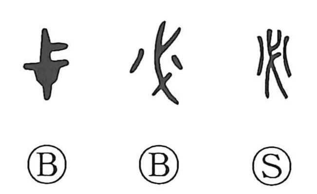

必

Kun: kanarazu | On: hitsu
certain ・ inevitable ・ without fail
Explanation
必 pictures the fitting at which a weapon's blade is attached to its shaft. The early shape emphasizes the blade and its fastening; additional strokes can show its gleam. It is the earlier writing for 柲, the weapon's haft or fitting.
Such weapons could also be sacred implements. Several characters containing 必, including 祕 and 密, concern rites performed with them. Their secrecy or solemnity belongs to those particular ritual settings.
必 was borrowed for its sound to write ‘certainly’ or ‘without fail.’ Bronze inscriptions also use the related fitting-shaped 弋 for this adverb. The familiar necessity or certainty continues this sound-loan use.